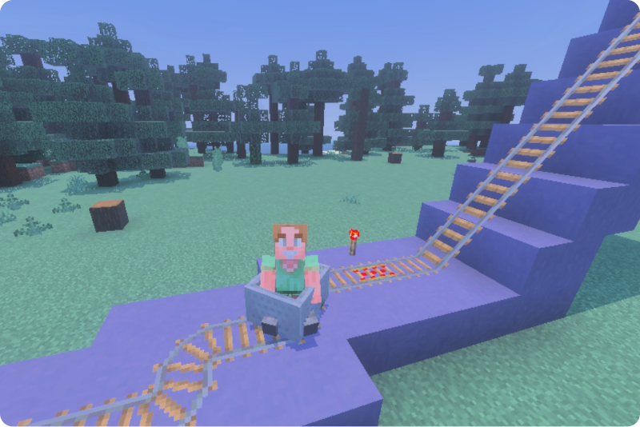

Pixel Park
An AI-powered predictive maintenance dashboard & hardware link for Minecraft ride control systems.

Tech Stack
Java, OpenJDK 25, Spigot/Paper API, Minecraft Protocol & Packets, Git, IntelliJ IDEA
Link to GitHub Repository
Overview
Pixel Park is a custom Java plugin (PixelParkCore) built on OpenJDK 25 that acts as an IoT-style telemetry bridge for Minecraft theme park ride systems. By intercepting minecart movement vectors, coordinates, and rotation in real time, it converts in-game physics into live telemetry streams designed for downstream data pipelines, 3D visualization, and AI-driven anomaly detection.